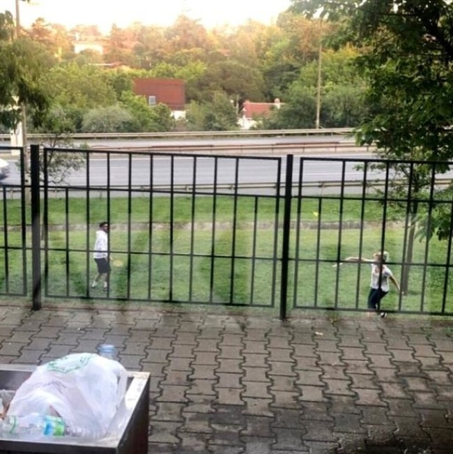

Farah Zeynep Abdullah kimdir, nereli? Ekranların güzel oyuncusu Farah Zeynep Abdullah, başarılı oyunculuğu ile dikkatleri üzerine çekmeyi başarıyor. Doğu Demirkol ile ilişkisini kısa süre önce bitiren güzel oyuncunun adı yeni bir aşk iddiasına karışıyor. Youtube Türkiye'nin en önemli isimleri arasında yer alan Reynmen ile Farah Zeynep Abdullah'ın baş başa olduğu fotoğrafların sosyal medyada yayılmasının ardından sevgililer mi iddiası ortaya atılıyor. Peki, Farah Zeynep Abdullah kimdir? Merak edilen detaylar haberimizde...
Geçtiğimiz aylarda Doğu Demirkol ile aşk yaşayamaya başlayan Farah Zeynep Abdullah'ın mutluluğu kısa sürdü. Demirkol ile yollarını ayıran 30 yaşındaki güzel oyuncu, bu sefer de 24 yaşındaki sosyal medya fenomeni Reynmen ile yakınlaştı. Aykırı'nın haberine göre; bir parkta tenis oynarken çok eğlendikleri görülen ikilinin samimi anları dikkat çekti.
Farah Zeynep Abdullah, 2019 yılının son aylarında aşk yaşamaya başladığı Doğu Demirkol ile yaklaşık üç aylık bir ilişki sonrası ayrılmıştı.

Reynmen lakaplı sosyal medya fenomeni Yusuf Aktaş ise Zalim İstanbul'un güzel oyuncusu Bahar Şahin ile aşk yaşamıştı.
Farah Zeynep Abdullah, (d. 17 Ağustos 1989; Gayrettepe, Beşiktaş, İstanbul), Türk oyuncu.Irak Türkmenlerinden olan bir baba ile Türk ve Boşnak kökenli bir annenin kızı olarak İstanbul'da doğdu.[1] Lisenin bir kısmını İstanbul Saint Michel Fransız Lisesi'nde okudu. Ancak daha sonra babasının işi gereği kaydını İngiltere'ye aldırarak, lise öğrenimini bu ülkede tamamladı. Öyle Bir Geçer Zaman ki adlı dizinin 2. sezonundan sonra diziden ayrılarak, oyunculuk kariyeri için kaydını dondurduğu Kent Üniversitesi (İngiltere) Fransızca-Drama bölümüne dönüp, eğitimini tamamladı ve 2013'te diplomasını aldı. Ayrıca, kadın-erkek eşitliği ile ilgili bir kampanya olan HeForShe reklamında oynadı. Amnesty Türkiye'nin de gönüllü destekçisidir.
Farah Zeynep, üniversiteye başlamaya hazırlanırken Öyle Bir Geçer Zaman ki adlı dizi için teklif aldı. İngiltere'deki okuluna dönmesine üç gün kala, deneme çekimlerinde başarılı bulunduğunu ve "Aylin" rolüne seçildiğini öğrendi. Bu dizide dört çocuklu bir ailenin ikinci çocuğu olan Aylin'i canlandırdı. Daha sonra Yılmaz Erdoğan'ın filmi Kelebeğin Rüyası'nda oynadı. Bu filmde baş rolleri Kıvanç Tatlıtuğ ve Mert Fırat ile paylaştı.[4] 2014 senesinde Star TV'de yayınlanan Kurt Seyit ve Şura adlı dizide başrol oynadı. Ardından 14 Şubat 2014'te Kerem Deren'in yönetmenliğini üstlendiği "Bi Küçük Eylül Meselesi" filminde Engin Akyürek ile baş rolü paylaştı. Çağan Irmak'ın yönettiği 2014 yılının en başarılı filmlerinden olan Unutursam Fısılda filminde Hümeyra'nın da oynadığı Hatice (Ayperi) karakterinin gençliğini canlandırdı. Ayrıca oyuncu Barbie Prenses ve Rockstar animasyon filmindeki "Prenses Azra"yı seslendirdi.